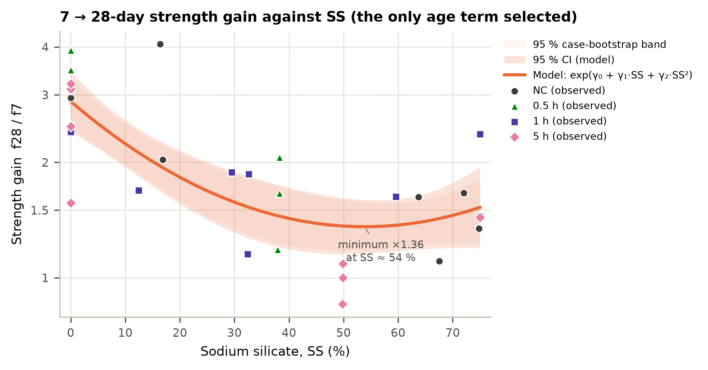
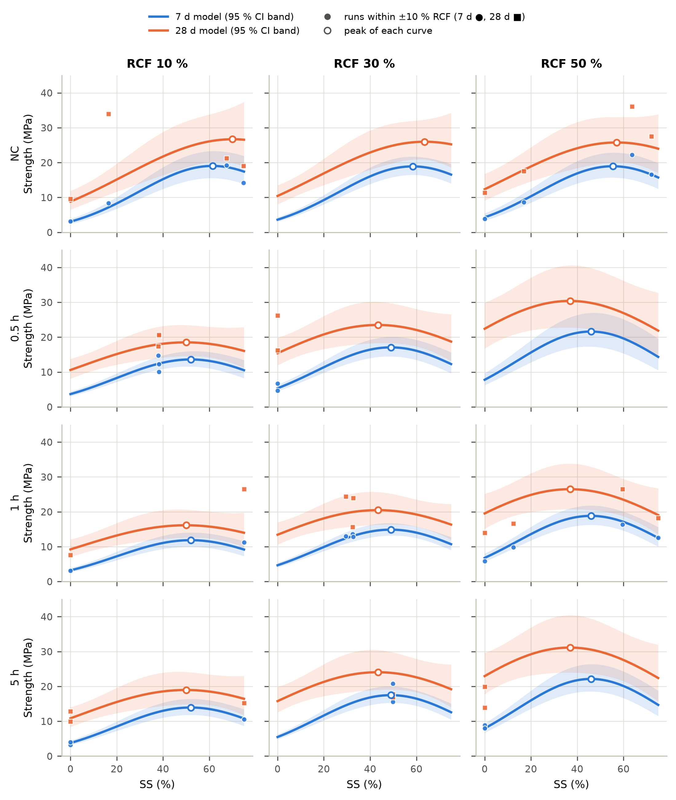
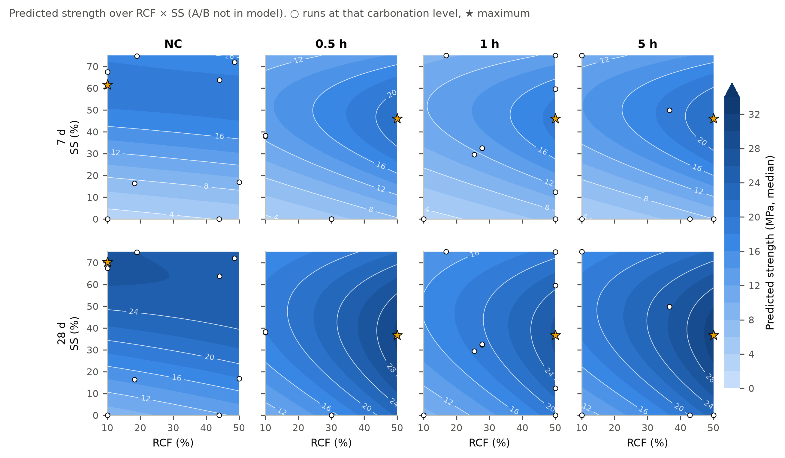
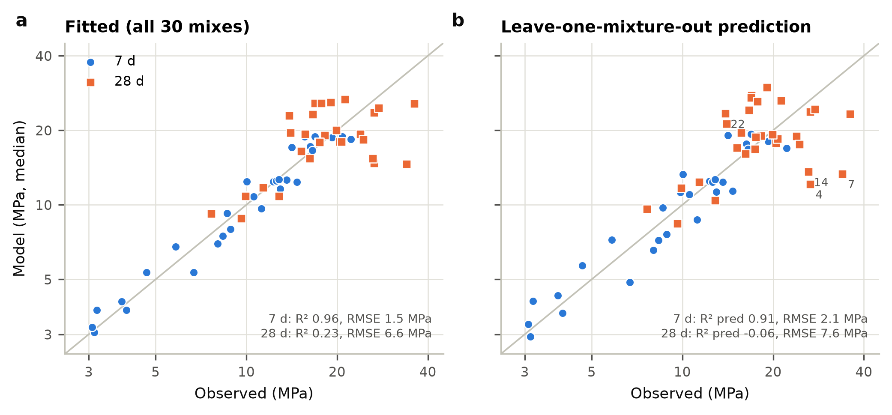
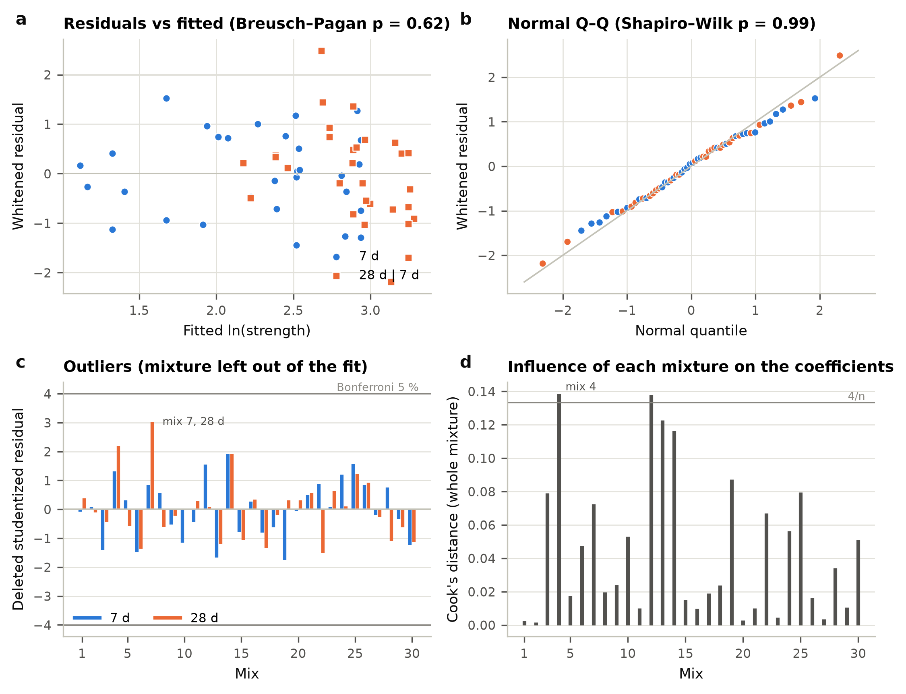

30 mixtures × 2 curing ages · linear mixed model (random mixture intercept, age-specific residual variance) · corrected data set · generated 2026-09-29
ln f = 2.9151 + 0.0591·A + 0.6010·D + 0.0465·C0.5h − 0.0915·C1h + 0.0705·C5h − 0.1102·AD − 0.4991·D² + 0.2057·K·A − 0.3441·K·D + g·(0.3752 − 0.3179·D + 0.3648·D²)
ln(f7) = 1.03206 + 0.00846427·RCF + 0.0610224·SS − 1.4687×10−4·RCF·SS − 4.8466×10−4·SS² + 0.0819631·C[0.5 h] − 0.0559958·C[1 h] + 0.105909·C[5 h] + 0.0102872·K·RCF − 0.00917525·K·SS
ln(f28) = 2.09 + 0.00846427·RCF + 0.0330868·SS − 1.4687×10−4·RCF·SS − 2.2523×10−4·SS² + 0.0819631·C[0.5 h] − 0.0559958·C[1 h] + 0.105909·C[5 h] + 0.0102872·K·RCF − 0.00917525·K·SS
ln(f28/f7) = 1.05795 − 0.0279356·SS + 2.5943×10−4·SS²
| Term | df | F | p | Residual bootstrap | Subsamples 24/30 | Evidence |
|---|---|---|---|---|---|---|
| RCF | 1, 20.0 | 0.89 | 0.36 | 100 % | 100 % | Retained for hierarchy |
| SS | 1, 26.6 | 67.26 | < 0.001 | 100 % | 100 % | Robust |
| Carbonation (4 levels) | 3, 20.0 | 1.75 | 0.19 | 99 % | 75 % | Retained for hierarchy |
| RCF × SS | 1, 20.0 | 6.57 | 0.019 | 84 % | 52 % | Moderate |
| SS² | 1, 20.2 | 25.38 | < 0.001 | 100 % | 100 % | Robust |
| Carbonated × RCF | 1, 20.0 | 7.02 | 0.015 | 85 % | 46 % | Moderate |
| Carbonated × SS | 1, 20.0 | 19.32 | < 0.001 | 98 % | 71 % | Moderate |
| Age (28 vs 7 d) | 1, 27.0 | 16.96 | < 0.001 | – | – | Design factor |
| SS × Age | 1, 27.0 | 19.77 | < 0.001 | 100 % | 100 % | Robust |
| SS² × Age | 1, 27.0 | 8.10 | 0.008 | 83 % | 79 % | Moderate |
Wald F tests, Satterthwaite df. Covariance UN: SD 0.147 (7 d), 0.335 (28 d), ρ = 0.52. Lack of fit: gain p = 0.24, level|gain p = 0.63. Box–Cox (final): λ = 0.14 (95 % CI −0.10 to 0.41). Exhaustive search of 53,105 models; ΔAICc to best CS model 6.4.


| Term (coded) | Effect at 7 d [95 % CI] | Effect at 28 d [95 % CI] | Change 7→28 d | p (change) | Age term in final model |
|---|---|---|---|---|---|
| RCF | 0.060 [−0.071, 0.191] | 0.083 [−0.188, 0.355] | 0.023 [−0.204, 0.250] | 0.83 | no (common effect) |
| SS | 0.754 [0.625, 0.884] | 0.319 [0.051, 0.587] | −0.436 [−0.660, −0.211] | < 0.001 | yes |
| Carb 0.5 h | 0.048 [−0.149, 0.246] | 0.089 [−0.320, 0.497] | 0.040 [−0.302, 0.382] | 0.81 | no (common effect) |
| Carb 1 h | −0.094 [−0.246, 0.059] | −0.145 [−0.460, 0.170] | −0.052 [−0.315, 0.212] | 0.69 | no (common effect) |
| Carb 5 h | 0.057 [−0.099, 0.213] | −0.231 [−0.553, 0.091] | −0.288 [−0.557, −0.018] | 0.038 | no (common effect) |
| RCF·SS | −0.106 [−0.196, −0.016] | −0.018 [−0.204, 0.168] | 0.088 [−0.068, 0.243] | 0.25 | no (common effect) |
| SS² | −0.678 [−0.824, −0.531] | −0.230 [−0.533, 0.073] | 0.448 [0.194, 0.701] | 0.001 | yes |
| K·RCF | 0.199 [0.037, 0.362] | 0.065 [−0.271, 0.401] | −0.134 [−0.415, 0.147] | 0.33 | no (common effect) |
| K·SS | −0.336 [−0.500, −0.172] | −0.159 [−0.498, 0.179] | 0.177 [−0.107, 0.460] | 0.21 | no (common effect) |
| Age | Carbonation | Maximum at | Median (MPa) | 95 % CI | 95 % PI (one batch) | Within 5 % of maximum | Scaled pred. variance / design max |
|---|---|---|---|---|---|---|---|
| 7 d | NC | RCF 10 %, SS 61.5 % | 19.0 | 15.5–23.4 | 13.2–27.5 | RCF 10–50, SS 46–72 | 0.45 / 0.59 |
| 7 d | 0.5 h | RCF 50 %, SS 46.0 % | 21.6 | 17.3–27.1 | 14.8–31.6 | RCF 46–50, SS 36–56 | 0.54 / 0.59 |
| 7 d | 1 h | RCF 50 %, SS 46.0 % | 18.8 | 16.2–21.8 | 13.4–26.5 | RCF 46–50, SS 36–56 | 0.23 / 0.59 |
| 7 d | 5 h | RCF 50 %, SS 46.0 % | 22.1 | 18.5–26.5 | 15.5–31.5 | RCF 46–50, SS 36–56 | 0.34 / 0.59 |
| 28 d | NC | RCF 10 %, SS 70.2 % | 26.7 | 19.9–35.8 | 12.7–56.1 | RCF 10–50, SS 49–75 | 0.19 / 0.24 |
| 28 d | 0.5 h | RCF 50 %, SS 36.8 % | 30.4 | 22.8–40.4 | 14.5–63.6 | RCF 46–50, SS 22–52 | 0.18 / 0.24 |
| 28 d | 1 h | RCF 50 %, SS 36.8 % | 26.5 | 20.8–33.8 | 12.8–54.8 | RCF 46–50, SS 22–52 | 0.13 / 0.24 |
| 28 d | 5 h | RCF 50 %, SS 36.8 % | 31.1 | 24.0–40.3 | 15.0–64.6 | RCF 46–50, SS 22–52 | 0.14 / 0.24 |

Leave-one-mixture-out predicted R²: 0.91 (7 d), -0.06 (28 d); RMSE 2.1 / 7.6 MPa. Nested CV of the selection procedure: 0.89 / -0.09. Residual-bootstrap re-selection keeps SS as the only age-dependent variable in 86 % of resamples. Shapiro–Wilk p = 0.99; Breusch–Pagan p = 0.62; largest |t| 3.02 (mix 7, 28 d; Bonferroni p = 0.44).

